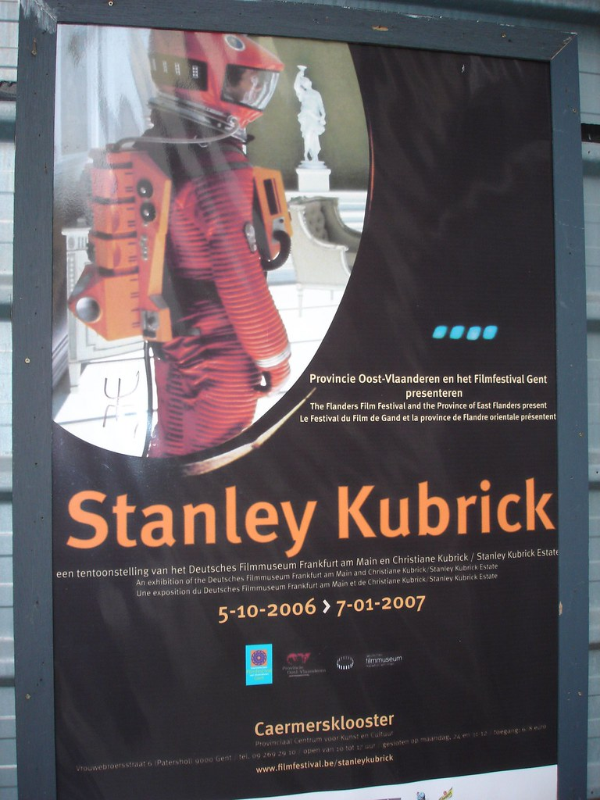

I saw Stanley Kubrick's Barry Lyndon three days in a row since it was just such a tremendous film to me in terms of the overall presentation.
With each viewing, I took away enough new information that I found mini films within the three hour odyssey.
